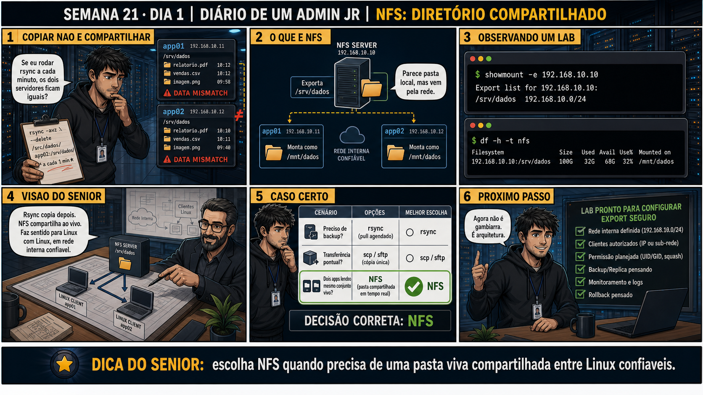

Semana 21 · Dia 1 | Nível Júnior — Redes
NFS: o Conceito
um diretório remoto que parece local — até a rede lembrar você de que não é
ANTES DE ALTERAR, OBSERVE. DEPOIS DE ALTERAR, VALIDE.
1. O chamado
Chamado #2101: "Preciso que três servidores de aplicação compartilhem os mesmos arquivos
de upload, sem copiar manualmente entre eles toda hora." A resposta clássica no mundo Linux é
NFS:
um servidor central
exporta
um diretório, e cada cliente
monta
esse mesmo diretório — mudanças feitas por um aparecem instantaneamente pros outros.
💡 Passa o mouse nas palavras destacadas pra ver uma dica rápida — clica se quiser a explicação completa com analogia.
2. Antes de ver as opções — tenta responder
🧠 Recall ativo: por que "o diretório parece local" é ao mesmo tempo a maior vantagem e a maior
armadilha do NFS pra quem está começando?
É vantagem porque aplicações não precisam de nenhuma lógica especial pra usar arquivos remotos — elas só
leem e escrevem no caminho montado, como qualquer outro diretório. É armadilha porque essa transparência
esconde a rede: se a rede cair, ou o servidor NFS ficar indisponível, operações de arquivo que pareciam
instantâneas podem travar (não falhar rápido, travar) — porque o kernel ainda está tentando se comportar
como se fosse um disco local, mesmo sem conseguir alcançar o servidor.
3. Questão comentada — clica numa alternativa
Um servidor NFS exporta /dados/uploads. Três clientes montam esse diretório em
/mnt/uploads. Um dos clientes cria um arquivo novo em /mnt/uploads/foto.jpg. O que acontece nos outros dois
clientes?
💡 Analogia do Sênior para Fixar: O princípio fundamental de 01 NFS CONCEITO é como o alicerce de sustentação de um viaduto: garante que a estrutura de comunicação suporte alto tráfego sem colapsar.
4. Decodificador de conceitos
Clica em qualquer termo pra ver a definição completa e uma analogia do dia a dia:
5. Ferramentas e leitura da evidência
| Comando | O que faz |
|---|---|
exportfs -v | No servidor, lista os diretórios atualmente exportados. |
showmount -e <servidor> | No cliente, lista o que um servidor NFS está exportando. |
mount -t nfs | No cliente, monta um diretório remoto localmente. |
--- no servidor (10.10.10.50) --- $ exportfs -v /dados/uploads 10.10.10.0/24(rw,sync,no_subtree_check) --- no cliente 1 --- $ showmount -e 10.10.10.50 Export list for 10.10.10.50: /dados/uploads 10.10.10.0/24 $ sudo mount -t nfs 10.10.10.50:/dados/uploads /mnt/uploads $ echo "teste" > /mnt/uploads/foto.jpg --- no cliente 2, ao mesmo tempo --- $ ls /mnt/uploads/ foto.jpg ← apareceu imediatamente, mesmo sem ter sido criado ali
5.1 O painel 5 da prancha de hoje mostra o servidor NFS caindo, e o comando ls travando indefinidamente num cliente, em vez de dar erro rápido
Um colega espera que, se o servidor NFS cair, os clientes recebam um erro imediato tipo "conexão recusada", como aconteceria com a maioria dos outros serviços de rede.
Por que um comando como ls num diretório montado via NFS pode TRAVAR
indefinidamente quando o servidor cai, em vez de retornar um erro rápido?
💡 Analogia do Sênior para Fixar: Diagnosticar anomalias em 01 NFS CONCEITO é como o eletricista usando o multímetro no quadro de disjuntores: mede a passagem de sinal no ponto exato da falha.
5.2 "Se eu tenho acesso root no cliente, tenho acesso root nos arquivos do servidor NFS também?"
Um colega assume que, como root local no cliente, ele automaticamente tem os mesmos privilégios totais sobre os arquivos montados via NFS.
Por que ter root no cliente NÃO significa automaticamente ter privilégios de
root sobre os arquivos do export NFS?
💡 Analogia do Sênior para Fixar: Aplicar as boas práticas de 01 NFS CONCEITO é como o protocolo de segurança da aviação: elimina pontos únicos de falha e garante previsibilidade operacional.
6. Procedimento profissional
- No servidor, confirme o diretório exportado com exportfs -v.
- No cliente, confirme o que está disponível com showmount -e <servidor>.
- Monte o diretório remoto com mount -t nfs <servidor>:/caminho /ponto/de/montagem.
- Teste escrita e leitura de um cliente, confirmando visibilidade imediata nos outros.
- Documente qual servidor é a fonte de verdade — múltiplos clientes escrevendo no mesmo lugar exige coordenação da aplicação, não só do NFS.
7. Laboratório guiado — marca conforme for testando
Segurança: execute os testes apenas em VMs descartáveis e confirme nomes de discos, hosts e arquivos antes de cada comando.
- Numa VM servidor de laboratório, confirme um export existente (ou peça ajuda pra criar um básico) com exportfs -v.Resultado esperado: diretório exportado listado com suas opções.
- Numa VM cliente, rode showmount -e apontando pro IP do servidor.Resultado esperado: lista mostrando o diretório disponível pra montagem.🧑🏫 Aqui entra o Mentor (em breve): se showmount não retornar nada, este é o ponto onde o chat com o Sênior-IA vai te ajudar a checar se o pacote nfs-common (ou equivalente) está instalado no cliente.
- Monte o diretório remoto e crie um arquivo de teste.Resultado esperado: arquivo criado com sucesso no ponto de montagem.
- Se tiver uma segunda VM cliente disponível, monte o mesmo export nela e confirme que o arquivo já aparece lá.Resultado esperado: arquivo visível na segunda VM, sem nenhuma ação adicional de sincronização.
8. Validação e encerramento
- NFS deixa um diretório do servidor visível como se fosse local no cliente, através de exportar/montar.
- Múltiplos clientes acessam o mesmo diretório físico, não cópias separadas.
- A transparência do NFS pode esconder problemas de rede — travamento em vez de erro rápido é comportamento esperado do modo padrão.
- Root no cliente não é automaticamente root no servidor NFS — root squash existe por design.
Rollback e limites
Desmontar um diretório NFS com umount é geralmente seguro e reversível — pode
exigir -l (lazy) ou -f (force) se o servidor estiver indisponível e a montagem travada. O cuidado real é
escrita concorrente: como o mesmo arquivo pode ser acessado por vários clientes ao mesmo tempo, conflitos de
escrita são responsabilidade da aplicação, não do NFS.
💡 Sobre repetição espaçada: "parece local, mas ainda é rede" é o mesmo
alerta que já apareceu com VPN (Semana 18) — qualquer abstração que esconde a rede merece o mesmo cuidado na
hora de diagnosticar. O Anki vai conectar os dois.
9. Resposta final
Alternativa correta: A. Nesta aula, o arquivo criado por um cliente
apareceu automaticamente nos outros, porque todos acessam o mesmo diretório físico exportado pelo servidor.
O ponto central do caso é este: um diretório remoto que parece local — até a rede lembrar você de que não é.
🔓 O que você desbloqueou hoje
Capacidade de entender o modelo cliente-servidor do NFS e suas implicações de
transparência. Amanhã você aprende a configurar exports com segurança, controlando exatamente quem pode
montar o quê e com quais permissões.